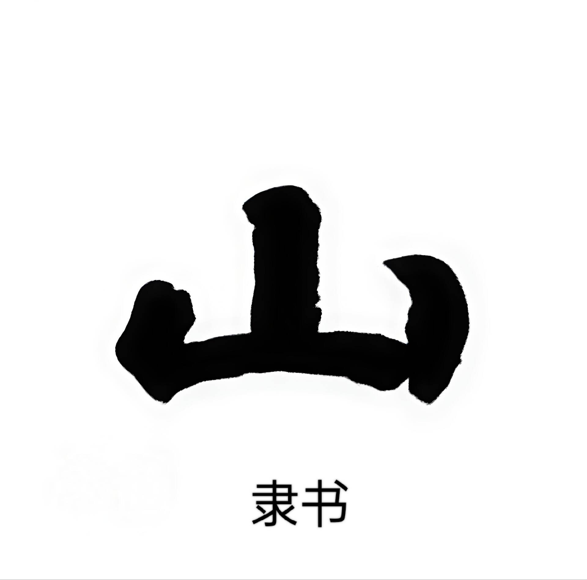

汉字成长史
几千年来，汉字的样貌不断变化，却始终承载着中华的文化与智慧，一起来看看汉字的成长足迹吧！
汉字时光机 · 拖动滑块穿越三千年





商周秦汉汉末魏晋魏晋
商朝 · 约公元前 1300 年
甲骨文
左右拖动滑块，看「山」字从一幅小画一步步变成今天的汉字
甲骨文
甲骨文是我国最早的成熟文字，刻在龟甲和兽骨上，字形像一幅幅小图画，大多描摹事物的真实形态，笔画纤细且弯曲，充满了原始的象形美感。
金文
金文又叫钟鼎文，刻在青铜器上，字形比甲骨文更整齐，笔画粗壮饱满，结构更稳重，象形的特点依然很明显，是汉字演变的重要一步。
小篆
小篆是秦朝统一后的标准字体，字形变得圆润匀称、线条流畅，笔画粗细一致，彻底摆脱了图画的形态，汉字开始走向规整和统一。
隶书
隶书是汉朝的主流字体，字形变圆为方，笔画出现了横平竖直的特点，还有了明显的撇捺顿挫，书写更简便，汉字的实用性大大提升。
草书
草书由隶书演变而来，笔画简约连绵、字形高度变形，书写速度极快，讲究气韵连贯和笔墨意境，重写意轻工整，是极具美感的书法艺术字体。
楷书
楷书也叫正楷，由隶书规整演变而来，字形方方正正、笔画清晰规范，横平竖直、结构严谨，是我们现在日常书写和印刷的标准字体。
行书
行书诞生于楷书之后，是介于楷书与草书之间的字体，笔画连绵呼应、书写行云流水，工整易认又书写快捷，兼顾实用性与艺术性。
小测试：汉字连连看
玩法：点击卡片选中，匹配对应的不同字体和现代汉字即可消除，全部匹配成功闯关完成！
资料来源：汉字字体演变知识参考《说文解字》、教育部《通用规范汉字表》及公开文字学资料整理。